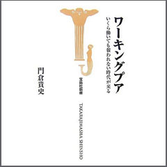

書評コーナー
「薬のチェックは命のチェック」で取り上げた書籍を紹介しています。
季刊誌26号より
ワーキングプア いくら働いても報われない時代が来る
門倉貴史 著／宝島社
ワーキングプアという言葉を、遅まきながら本書によって初めて知った。 働いても生活保護基準に満たないくらいの収入しか得られない人たちのことだ。 現在、日本では約５５０万人に達し、しかも増える傾向にあるという。 終身雇用と年功序列に守られて、平穏な老後を迎えた身にとっては、腰を抜かさんばかりの（スモンですでに抜けてるけど）ショックであった。
雇用主の都合による突然の解雇の後、低賃金、パート労働の繰り返しとなる、近年の雇用形態の変化が生み出した新たな貧困層の増大である。 この事態を進行するままに放置しておけば、日本で生活する相当数の人々が貧困化するという大きな影響が出ることを憂えた著者は、 そのよって成るところを分析し、実態を報告し、雇用システムの変革の提言を行っている。（は）
■ ２２０頁/本体価格７２０円（税別）
ご購入はこちらからできます